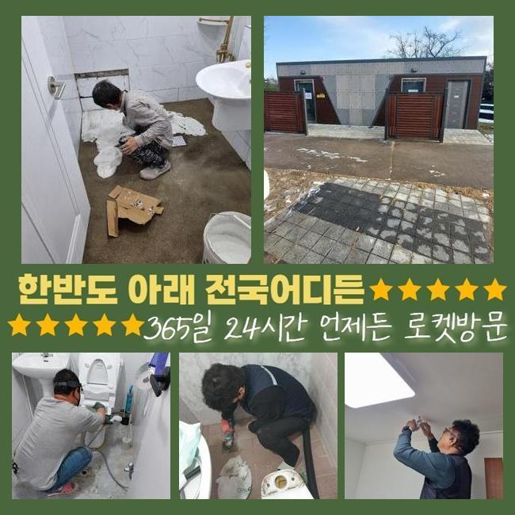
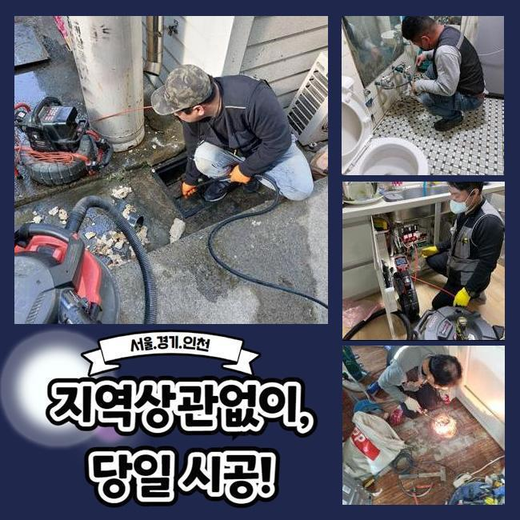
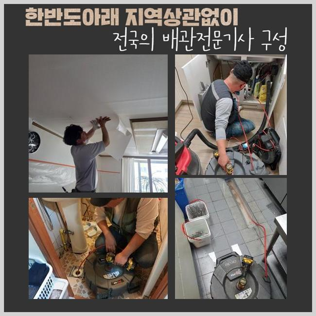
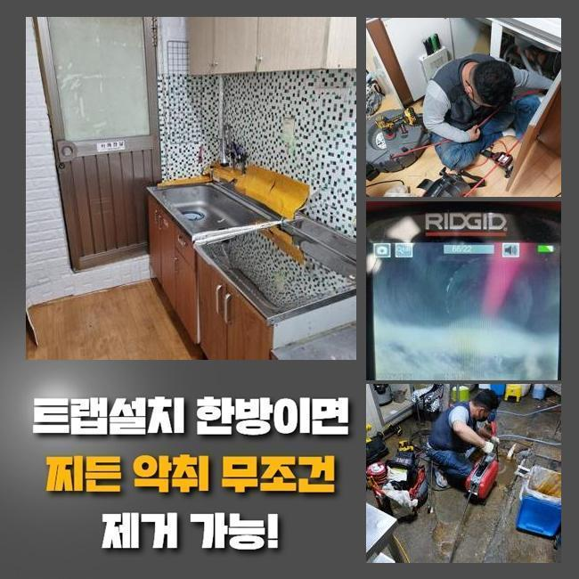
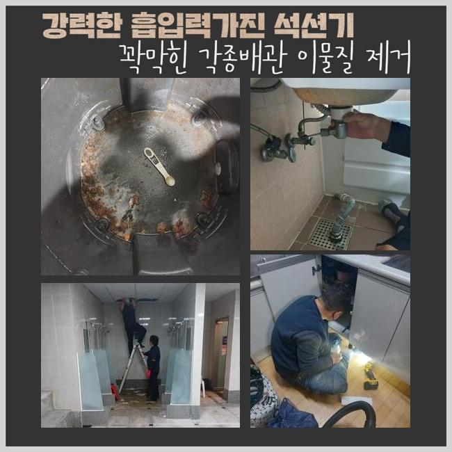

🏠 수원 평동화장실하수구역류 곡선동 오수맨홀청소 누수
수원 싱크대막힘 전문 시공 후기

📋 작업 개요
- 위치: 수원
- 서비스 유형: 싱크대막힘, 변기막힘, 하수구막힘, 배관막힘, 맨홀막힘, 누수수리, 역류해결, 뚫는업체, 배관청소, 고압세척, 설비공사, 악취차단
- 작업 일시: 2025. 1. 11. 7:03
- 업체명: 하수구수사대 (010-5615-2118)
🔍 문제 상황
수원 평동화장실하수구역류 곡선동 오수맨홀청소 누수
하수관이 차단되는 사태는 누구나 한번씩은 경험하셨을거라 생각하고 있어요
갑작스레 주방쪽이나 화장실의 변기에서 생기는 관로막힘은 일상에 곤란함을 야기하게 되는데요
그렇다고 한다면 싱크대 배수관에서는 왜 막힘이 일어나는것인지 알아볼 필요가 있겠죠
부엌시설물은 요리과정에서 생겨나는 음식물의 잔재나 석회성분 등이 배수관에 적체되어 물막힘이 생긴답니다
그 후로는 배수문제를 비롯하여 고약한 냄새까지 퍼지며 점차적으로 배수관이 노후화되어 누수까지 나타날수 있겠죠
통상적으로 해당되는 막힘이 생겼다면 배관을 도구로 분해해서 처치해나가시려 하시죠
다만 해당 대책은 단기간의 정리만 해줄뿐 근원적인 트러블을 소멸시키지 못한다면 정체가 재발하게 되겠죠
정체를 일으킨 이물들이 관로 하부에 있다면 보통사람들이 그것들을 포착하거나 정리하기 힘들기 때문이죠
거기에 더해 잘못 작업을 진행하면 도리어 파이프에 부담을 주게되어 잔재들을 적절히 소멸시키지 못할수가 있죠
그렇기에 배관에서 트러블이 일어났다면 기술자를 찾아 분명하고 깔끔하게 정리하는게 합당합니다

🔎 원인 분석
💡 전문가 진단: 정밀 진단 장비를 사용하여 슬러지의 고착 여부를 판명하고 타격/세척 작업을 실시했습니다.
어저께 저흰 관로 막힘으로 수선의뢰를 받았는데요
의뢰자께서는 화장실의 물막힘으로 역류상황이 생기고 냄새까지 올라오는 바람에 평범한 삶에 커다란 지장을 감당하고 있으셨죠
구린내가 진동하는바람에 집안에 있기가 힘들어졌고 역류증상까지 발발하여 많은 곳이 오염되는 상황까지 미치게 됐다고 하시네요
고객의 시급한 사태를 고려해서 즉각적으로 문제의 장소로 출동하였습니다
현장으로 이동후 의뢰인과 이야기를 나누고 고장상황을 자세히 검사했습니다
고객님은 욕실에서 생활하수가 빠지지 못하는 것은 물론 위로 올라오는 상황에 이르러 실내가 더러워진 상황이라고 토로하셨어요
이주일전 쯤부터 이런 사태가 생겼는데 놔뒀더니 더욱더 악화한 상황이었죠
그러한 상황에서는 단조롭게 관로뚫음을 이행하여서는 본질적인 해결에 다가서기 힘들죠
침전물이 관로에 단단하게 접착된거라 안쪽의 현황을 세밀하게 검사한다음에 적합한 기기와 방식을 토대로 공정에 임해야 됩니다
안쪽에서 일어난 막힘은 직관적으로 검증하기 까다롭죠
그러한 이유로 저희팀에선 배관카메라를 이용하여 배수관내측의 정황을 정밀하게 관측하는 과정을 진행하였죠
내시경기기로 조사해보았더니 파이프 내부엔 장시간 누적된 음식쓰레기와 유분찌꺼기들이 뒤섞여 관로를 철저하게 가로막고 있었답니다

🔧 작업 과정
또한 침전물들이 바위처럼 단단해져 간소하게 고압청소만 하여서는 처치가 어려웠답니다
배관관찰을 끝낸후에 샤프트기기를 통해서 관로에 고정된 잔재들을 처치하는 시공을 시행하였어요
플렉스샤프트는 관로내부에 적체된 이물들을 효율적으로 부수고 소제하는 장비로 다양한 혼합슬러지들이 움직이지 않는 상황에서 큰 가치를 발휘하죠
분쇄기기는 강한 회전기능을 토대로 고형물을 작게 깨뜨려서 배관면에 체류중인 단단한 기름찌꺼기나 각종 노폐물들을 깨끗이 소제할수 있답니다
다만 너무 강력한 힘으로 시공을 이어나간다면 파이프가 망가질수 있어서 전문적 테크닉과 사려깊은 수선이 필요한것이죠
본 지점은 게다가 이물들이 배관에 견고하게 자리잡은 경우였기에 한 두차례의 가동만으로는 제거하기 어려웠죠
주위를 둘러싼 백회물질은 한층 그런 사태를 어렵게했고요
그러한 이유로 저희팀에선 물세척 공정과 분쇄장비를 동시 이용하면서 찌꺼기를 조밀하게 파쇄하고 온전히 제거하는 작업을 시행하였습니다
강인한 파워로 침전물을 제거할때엔 잔재들이 주위로 퍼지지 못하게끔 꼼꼼하게 관리해야 하는데요
슬러지가 주위로 퍼져나가 주변부가 매우 더러워진다면 처리가 곤란해질수도 있어 주의깊은 작업이 요구되죠
그러하기에 작업과정에서 그러한 사태를 차단하려 보양절차를 선행했고 의뢰인께서 염려하지 않으시게끔 세심하게 과정을 진행했죠
이물을 전부 처리한뒤 재차 배관카메라를 집어넣어 관로를 점검했어요
안에 상존하는 석회성분이나 누수문제 등을 검사하는건 굉장히 중요하다 말씀드릴수 있죠
본 현장에선 여러번 관 내측을 조사하고 연쇄적으로 발발하기 쉬운 문제들을 사전에 차단했습니다
전반적으로 노폐물들이 사라졌다는 걸 확인하고 수돗물을 내려보내며 배수기능을 회복했는지 시험하였습니다
빠르게 빠져나가는 걸 수차례 시험으로 파악하였습니다
배수문으로 오수가 순조롭게 흘러가는 정황을 고객분도 인지하셨고 완전하게 고쳤다는걸 확실시할수 있었죠
공사가 지연되어 노폐물이 한층 많아진다면 아래층으로 배관문제가 전이될수 있죠
그렇게 된다면 고쳐야할 요소가 커질것이 자명하므로 선제적 검사를 받으시길 바라요


✅ 작업 완료
또 하수구막힘은 생활하시는데 고충을 발생시키므로 가급적이면 재빠르게 처리해야 돼요
배수관정체 기간이 길어지면 구린내가 올라오는것을 포함해서 관파손으로 생긴 누설증상까지 일어날수 있다는것도 인지하고 있어야 하겠죠
공사하기 전엔 필수적으로 적합한 장비들을 갖춰야 해요
그것들이 충분히 없는경우 관측을 적절히 하지못하는 상황이 발현되어 얼마안가 재발상황이 발발할수 있죠
갑작스럽게 발생된 배관정체로 해결이 시급하다면 저희쪽으로 편하게 전화해 주세요



⚠️ 베란다 누수 및 방수 관리 방법
- ✅ 비가 많이 올 때 창틀 주변이나 아래층 천장에 얼룩이 생기는지 정기적으로 확인해 보세요.
- ✅ 우수관 주변 실리콘 마감이 들뜨거나 깨진 틈새가 있는지 손상 여부를 수시로 체크하세요.
- ✅ 베란다 바닥 타일의 줄눈(메지)이 소실되면 그 틈으로 물이 침투하여 누수가 유발됩니다.
- ✅ 누수 의심 증상 발견 시 방치하면 아래층 손실이 커지므로 즉시 전문가의 진단을 받으십시오.
💡 핵심 정리
- 확실한 장비 작업(내시경 점검 및 샤프트 스케일링)으로 원인을 뿌리 뽑습니다.
- 작업 후 1년 이내에 동일한 부위 재발 시 100% 무상 A/S 서비스를 보장합니다.
- 서울 · 경기 · 인천 전 지역에 24시간 언제든 긴급 출동할 수 있도록 항시 대기 중입니다.
❓ 자주 묻는 질문 (FAQ)
🚨 수원 싱크대막힘 문제로 고민이신가요?
정확한 원인 진단과 확실한 시공으로 재발 없는 해결을 약속드립니다.
24시간 긴급 출동 | 서울 · 경기 · 인천 전지역 | 1년 내 재발 시 무상 A/S